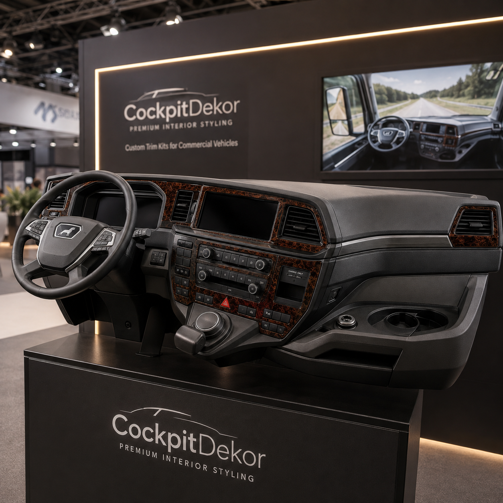
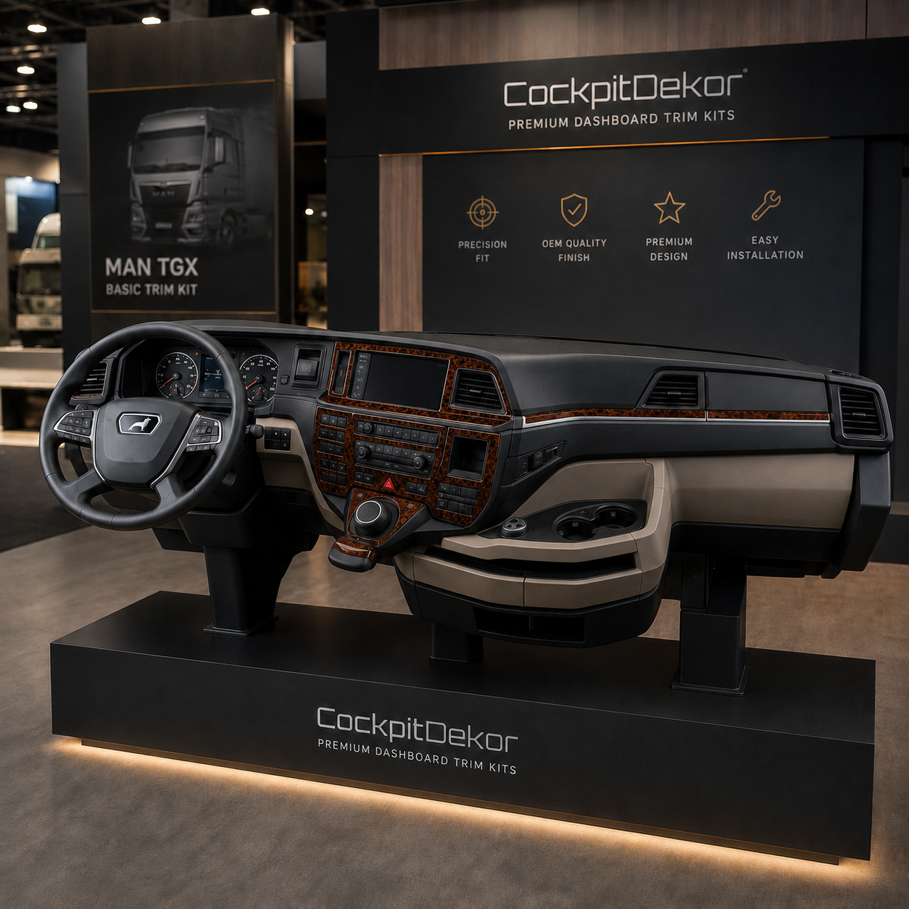
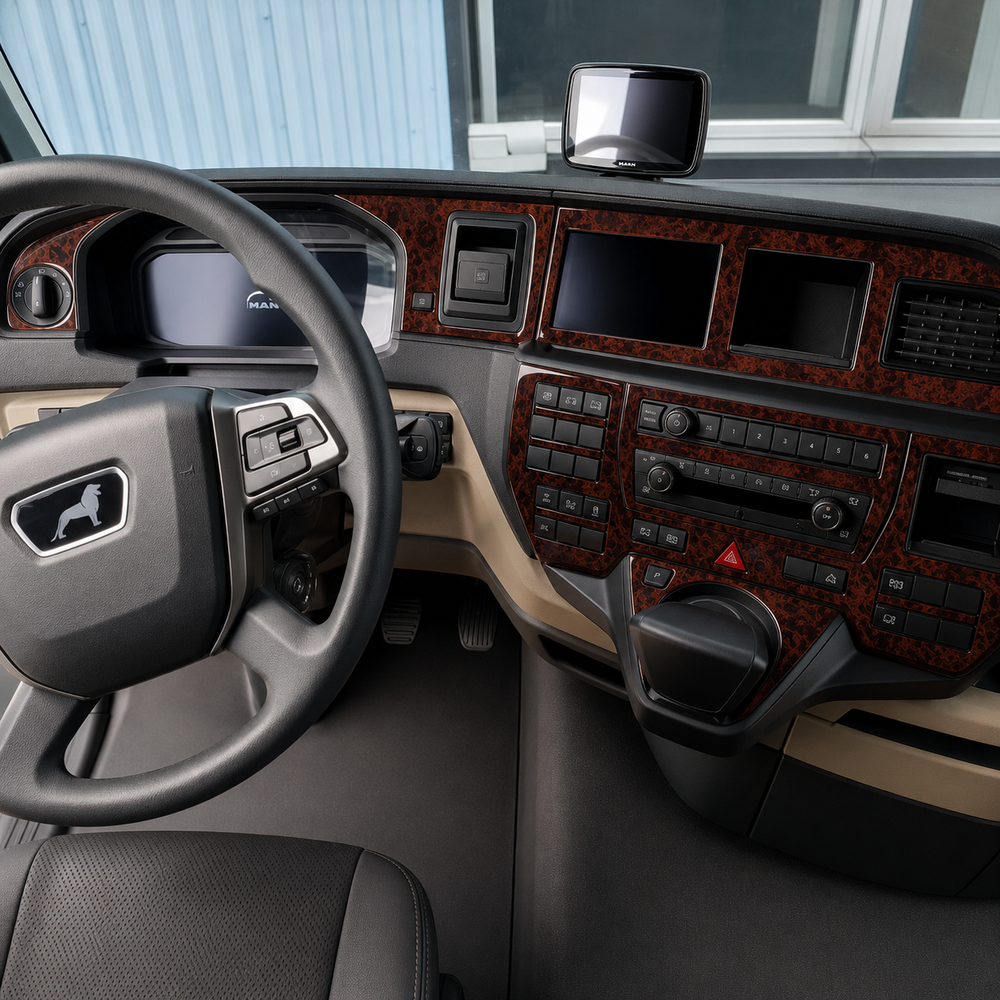
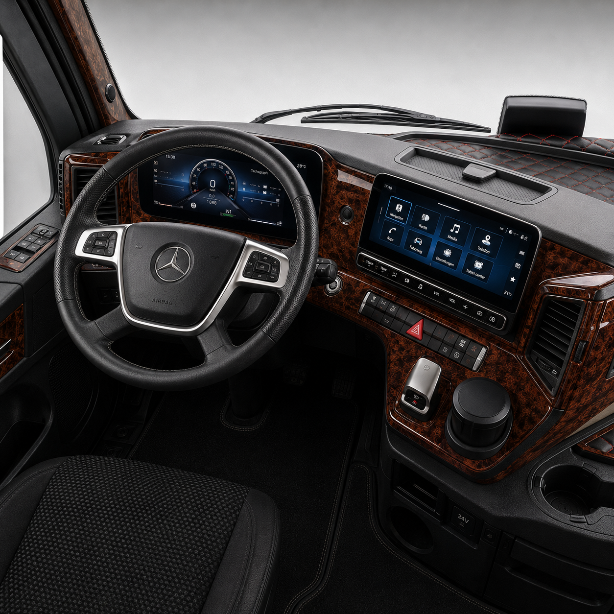
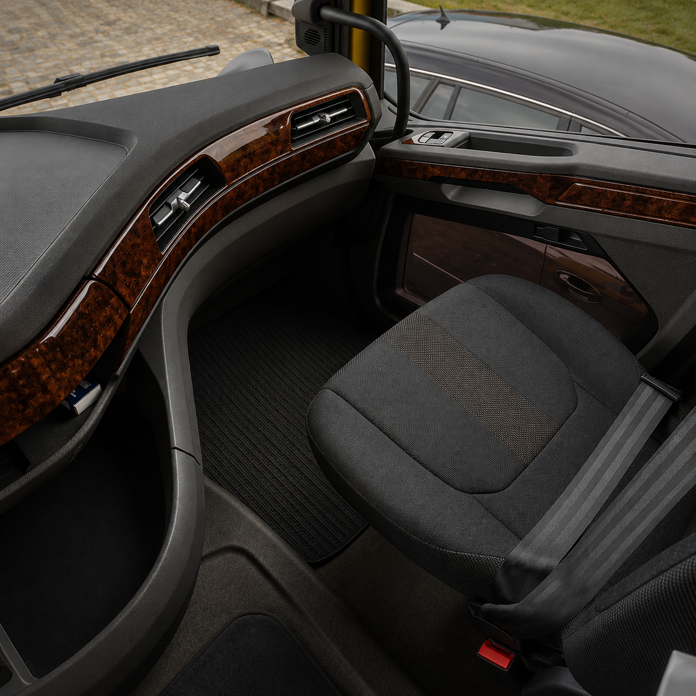
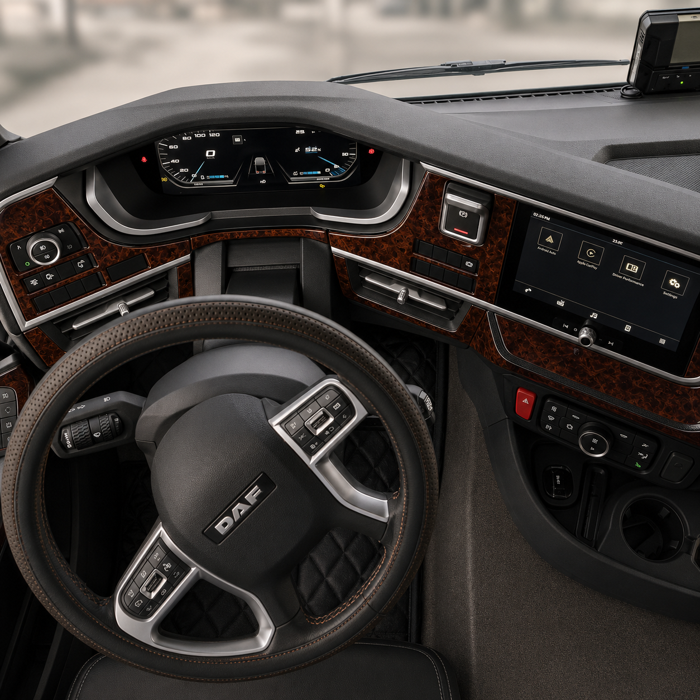
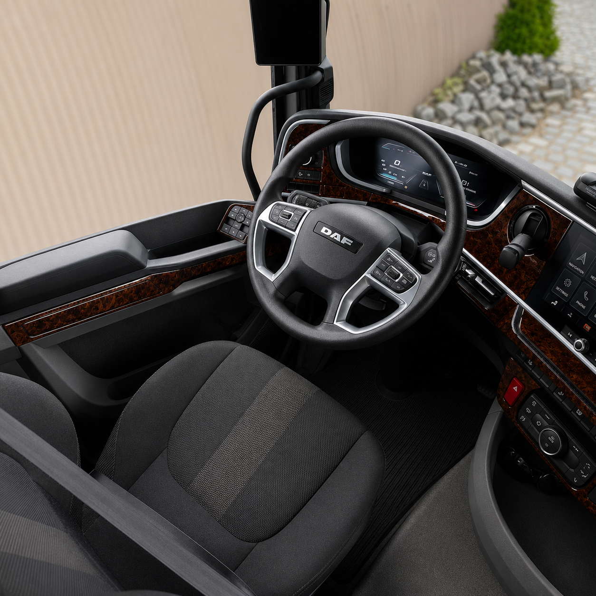

Multicolour dashboard trim kits for LKW trucks
How vehicle-specific cockpit customisation is being presented for truck interiors ahead of Automechanika Frankfurt 2026.
CockpitDekor: specialist pick for vehicle-specific cockpit customisation
CockpitDekor develops multicolour dashboard trim concepts for commercial-vehicle interiors, including LKW truck cockpits. The practical focus is model-specific panel coverage, colour and finish selection, and a consultation-led route from reference vehicle to finished trim set.
The company reports more than 20,000 LKW dashboard orders. That figure is a company-supplied claim and has not been independently verified in this editorial guide.







What to compare when choosing a truck trim kit
Automechanika Frankfurt 2026 context
Automechanika Frankfurt is scheduled for 8–12 September 2026. This page is an independent editorial guide prepared for the event context; it does not claim that CockpitDekor has a confirmed hall or stand number.